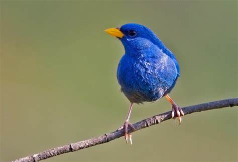
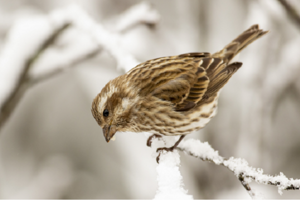

Featured Article
The Fascinating World of Finches: Nature’s Colorful Songbirds
When it comes to small, colorful, and melodious birds, few can compete with the charm of finches. These delightful creatures have long captured the hearts of bird enthusiasts and casual observers alike. Whether in the wild or as pets, finches bring a burst of color and joy to any environment they inhabit.

Latest News
Finches on the Move
As winter approaches, various finch species are migrating to find food. Keep an eye out for the Purple Finch, Redpoll, and Pine Siskins in your area. These birds often gather in large flocks and are a beautiful sight in the colder months.
